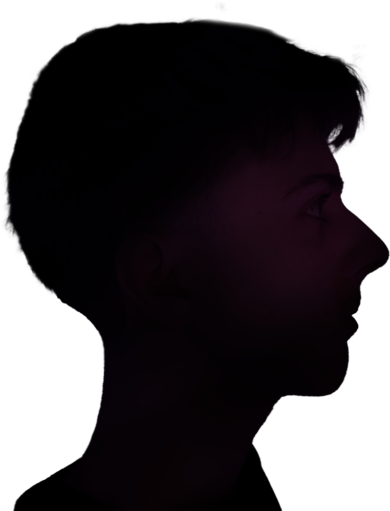
Lony MICHAUX
Alternant développeur mobile chez Paxity et étudiant en 3ᵉ année de BUT Informatique à l'Université de Lille. Je conçois et développe le frontend d'une application mobile, de l'UI/UX jusqu'à la mise en production. Mon objectif : poursuivre en master en alternance pour m'épanouir comme développeur mobile.
Mon expérience
Mon alternance : mon rôle réel, mes missions et ma façon de travailler au quotidien.
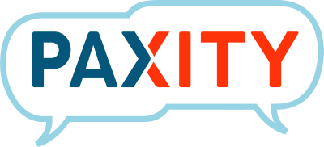
Paxity — Alternant développeur mobile
Septembre 2025 – aujourd'hui · Startup de l'Économie Sociale et Solidaire (ESS)Paxity est une jeune startup de l'Économie Sociale et Solidaire qui propose des solutions simples et concrètes pour la gestion des incidents dans les bâtiments, via des QR codes. Au sein d'une petite équipe de 3 personnes, je suis le développeur de l'application mobile : je porte l'ensemble du frontend, du code jusqu'à l'expérience utilisateur. Le rythme était d'une semaine sur deux ; depuis mi-mars 2026, je suis à temps plein dans l'entreprise pour préparer la sortie de l'application.
Mes missions
- Développer le frontend de l'application mobile en Flutter
- Concevoir et améliorer l'UI / UX
- Intégrer les API du back pour connecter l'appli aux données
- Préparer et gérer la mise en production sur les stores
Mon autonomie
Au début, mon tuteur me guidait beaucoup. Aujourd'hui, il m'indique l'objectif et je sais où chercher et comment avancer par moi-même. J'ai gagné en autonomie sur le développement et la mise en production ; la conception de fonctionnalités entièrement nouvelles reste le terrain où je continue de progresser.
Mes interactions
L'équipe compte trois personnes : mon tuteur (développeur également, qui gère le back), une alternante commerciale et moi. Je travaille en autonomie sur le frontend pendant qu'il développe le back ; nous échangeons en continu et avançons en confiance. L'application n'étant pas encore publiée, les utilisateurs finaux arriveront avec le lancement.
Ce dont je suis fier
Avoir modernisé l'interface de l'application par rapport au site existant. J'ai apporté ma « fraîcheur » de jeune développeur et mon expérience personnelle pour proposer une UI plus actuelle et agréable à utiliser.
Mes compétences techniques
Compétences mobilisées en contexte professionnel et lors de mes projets, avec mon niveau de maîtrise.
Flutter / Dart
ConfirméLe cœur de mon alternance : je développe l'application mobile Paxity de bout en bout. Une technologie apprise en autodidacte (mon projet Yudel) puis consolidée en entreprise.
UI / UX mobile
AutonomeConception et amélioration d'interfaces claires et cohérentes. J'ai modernisé l'UI de l'application et je veille en permanence à la simplicité d'usage.
Intégration d'API REST
AutonomeJe connecte le frontend au back développé par mon tuteur : appels réseau, gestion de l'état et des données serveur.
Mise en production (stores)
AutonomePréparation et publication sur le Play Store et l'App Store : builds, signatures, configuration et respect des exigences des plateformes.
Sécurité & qualité
En progressionJe vérifie systématiquement la sécurité et la qualité du code avant chaque livraison, une exigence que je continue d'approfondir.
Langages
- Java
-
 Dart
Dart
-
 HTML/CSS
HTML/CSS
-
 JavaScript
JavaScript
-
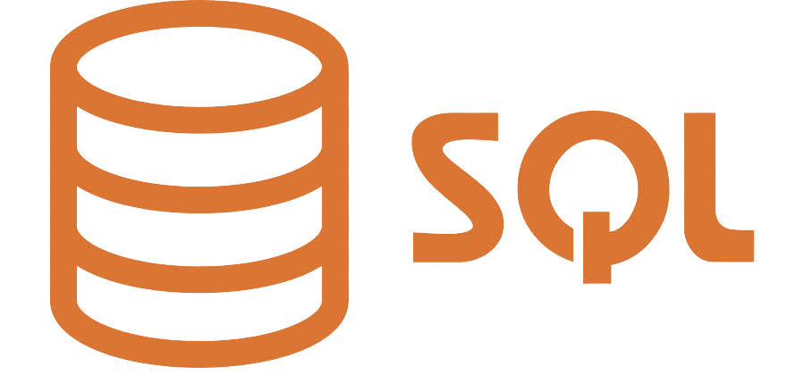
SQL -
 Python
Python
Outils
-
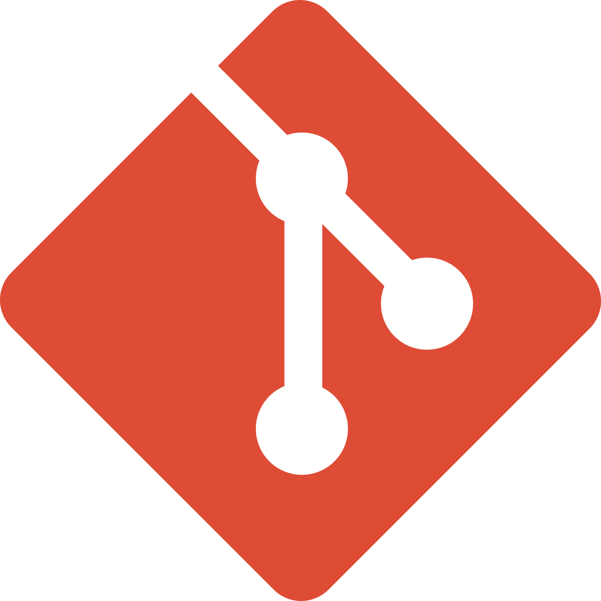
Git -
 Visual Studio Code
Visual Studio Code
-
 IntelliJ IDEA
IntelliJ IDEA
-
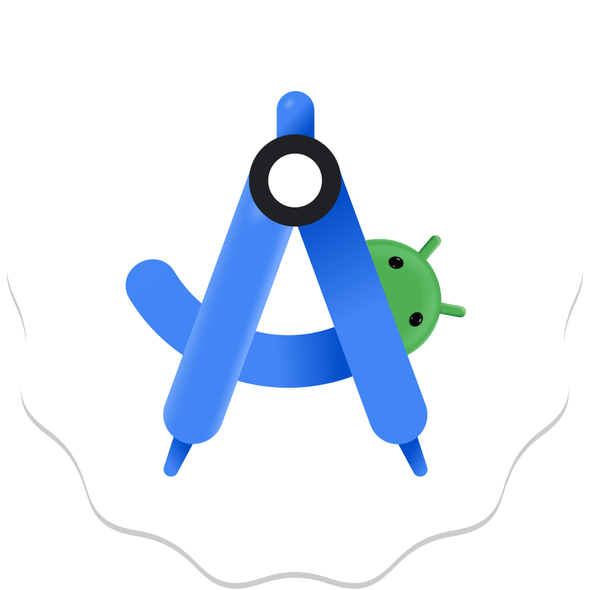
Android Studio
Langues
- Français (langue maternelle)
-
 Anglais (niveau B2)
Anglais (niveau B2)
Logiciels
-
 Adobe Photoshop
Adobe Photoshop
-
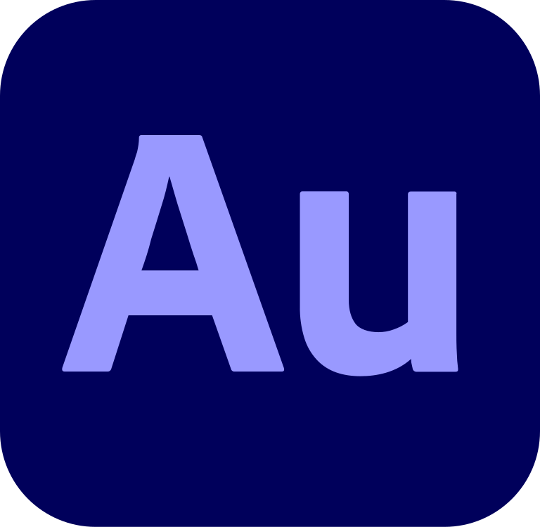
Adobe Audition -
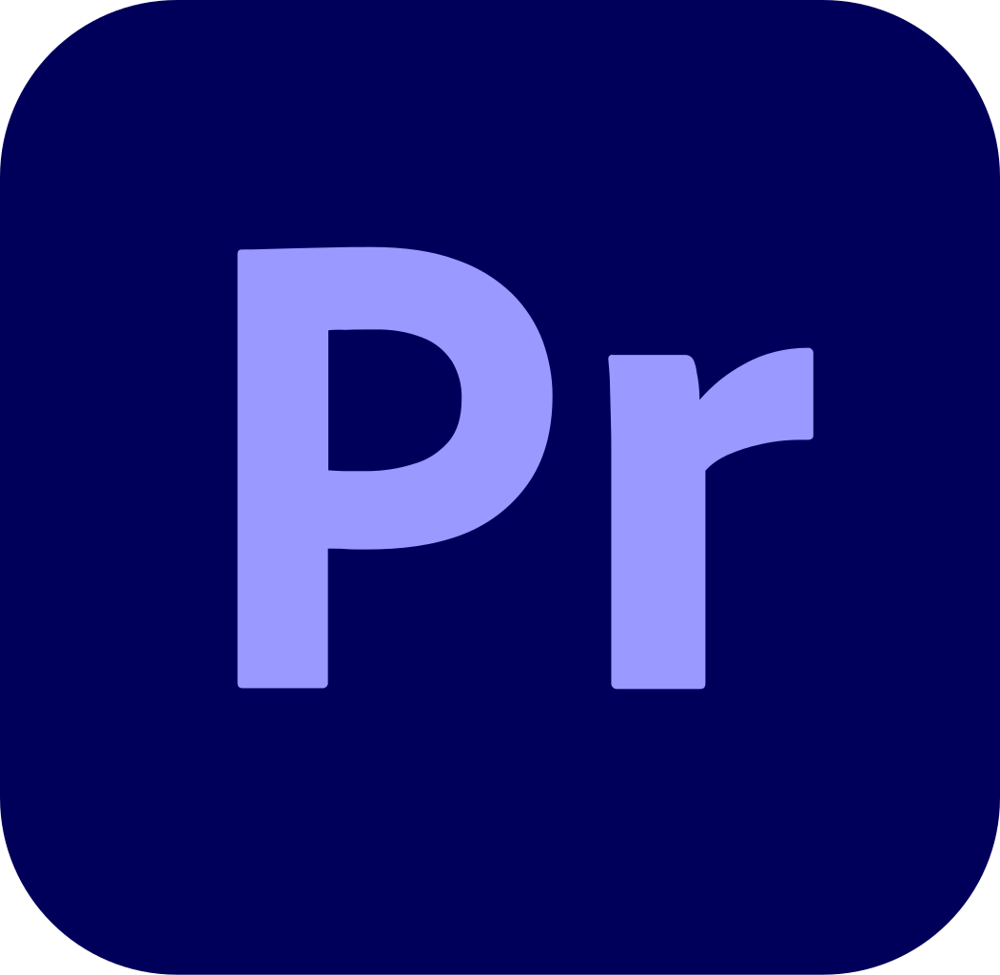
Adobe Premiere Pro -
 DaVinci Resolve
DaVinci Resolve
-
 Figma
Figma
Mes soft skills
Compétences comportementales renforcées en entreprise, illustrées par des situations concrètes — et ce qu'elles disent de ma façon de fonctionner.
Ma manière d'être
Gestion du stress et de la pression
Situation À l'approche de la mise en production sur les stores, j'ai dû tenir une deadline serrée. J'ai gardé mon calme en découpant le travail, en priorisant les tâches par ordre d'importance et en communiquant en continu avec mon tuteur.
J'ai compris que je gère d'autant mieux la pression que je structure et que je communique : l'organisation est mon antidote au stress.
Engagement et sens des responsabilités
Situation Depuis mi-mars, je suis à temps plein dans l'entreprise et porte seul le frontend de l'application à l'approche de son lancement.
Je me sais assidu et pleinement investi : on peut compter sur moi pour mener une mission jusqu'au bout.
Ma manière de communiquer
Vulgarisation et pédagogie
Situation Mon tuteur n'a pas toujours le temps de creuser certains sujets, comme le processus de publication sur les stores. Je le prends alors en main : je recherche, j'analyse, puis je lui explique clairement avant de passer à l'action.
J'aime rendre le complexe accessible. Je sais aussi que vulgariser des concepts plus théoriques reste un point que je veux continuer de travailler.
Réception du feedback
Situation Les retours de mon tuteur sont honnêtes et directs, qu'il s'agisse de me conforter ou de me corriger.
Je les accueille comme un levier de progression plutôt que comme une critique : c'est ainsi que j'avance le plus vite.
Travailler avec les autres
Coopération en petite équipe
Situation Dans une équipe de trois, la coopération est directe : je gère le frontend, mon tuteur le back, et nous synchronisons nos avancées en continu.
Je sais trouver ma place dans un collectif réduit et avancer en confiance, sans avoir besoin d'être surveillé.
Gestion des désaccords
Situation Il nous arrive d'avoir des avis différents sur l'UI/UX — l'emplacement d'un bouton, l'utilité d'une fonctionnalité. On en discute dans le calme, avec écoute et respect, et on aboutit toujours à un compromis.
Je ne vis pas le désaccord comme un conflit mais comme un moyen d'améliorer le produit.
Connaissance de soi
Ce que cette alternance m'a appris sur moi-même.
Cette alternance a été un véritable révélateur. En me confrontant au réel, j'ai autant appris sur le métier que sur moi-même — et notamment que j'avais bien plus de capacités que je ne le pensais.
Mes points forts
- Assiduité et investissement
- Flexibilité et adaptabilité
- Capacité à apprendre en autonomie (Flutter appris seul)
- Organisation et sang-froid sous pression
Mes axes de progrès
- Gagner en autonomie sur la conception de fonctionnalités entièrement nouvelles
- Mieux expliquer les concepts théoriques, pour les rendre aussi clairs que le reste de ma communication
Les retours qui me font avancer
Les retours de mon tuteur sont honnêtes et toujours gratifiants. Ils me confortent dans mes choix quand c'est mérité, et me recadrent quand il le faut — c'est exactement le cadre dans lequel je progresse le mieux.
Mes besoins pour évoluer
Pour continuer à grandir, j'ai besoin d'un environnement qui me fait confiance tout en me poussant à sortir de ma zone de confort. C'est pourquoi je souhaite poursuivre en master en alternance, idéalement dans la continuité de Paxity.
Mes projets
Projets universitaires et personnels qui ont forgé mes bases — dont Yudel, à l'origine de ma maîtrise de Flutter.
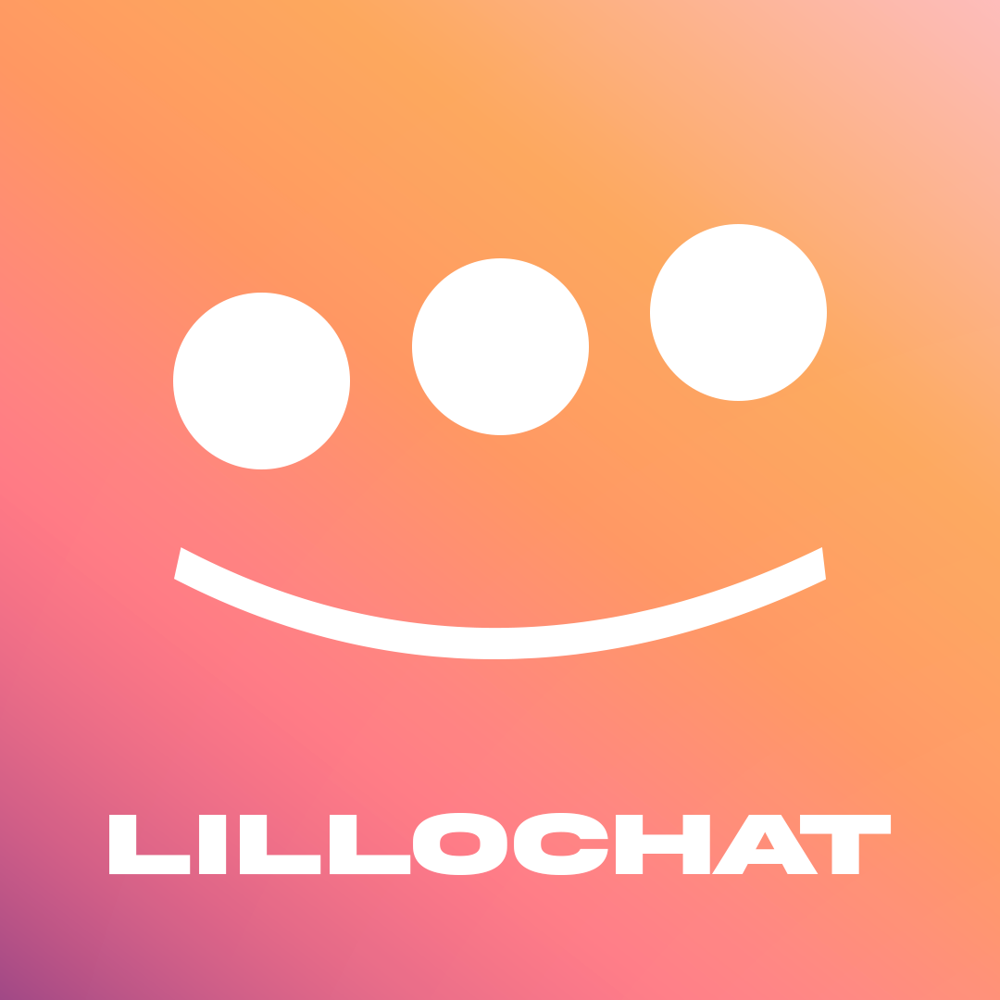
LilloChat
LilloChat est un réseau social basé sur des fils de discussion, permettant aux utilisateurs de créer, rejoindre et animer des conversations en toute simplicité. Conçu pour favoriser les échanges faciles, il offre une interface intuitive. Le projet a été développé avec Java, Tomcat, Servlets et SQL, en architecture MVC, garantissant une bonne séparation des responsabilités. La gestion des utilisateurs et des mots de passe est sécurisée grâce à Bcrypt. Ce projet m’a permis d’acquérir des compétences en développement back-end, structuration d’une base de données et gestion des sessions utilisateurs, tout en mettant en pratique des concepts avancés en sécurité et performance des applications web.
Fonctionnalités
- Création et gestion de fils de discussion
- Possibilité de rejoindre et quitter des fils
- Envoi et suppression de messages
- Système de likes sur les messages
- Gestion des membres de fils
- Possibilité d'envoyer des images
- Système d'expiration automatique des messages
Technologies
Compétences techniques acquises
Savoir-être
Visuels
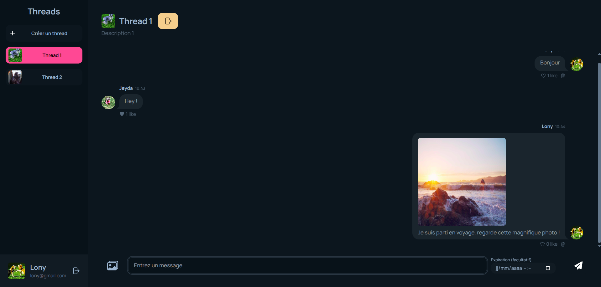
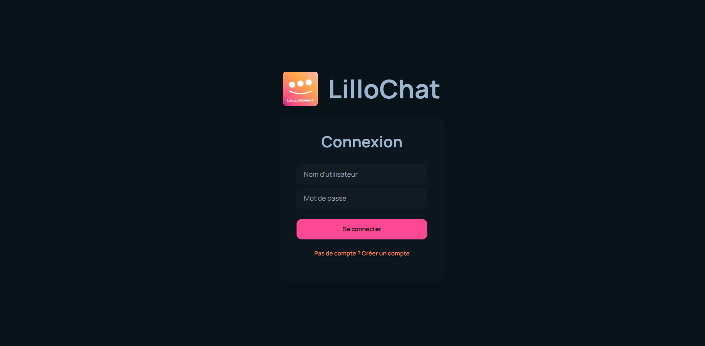
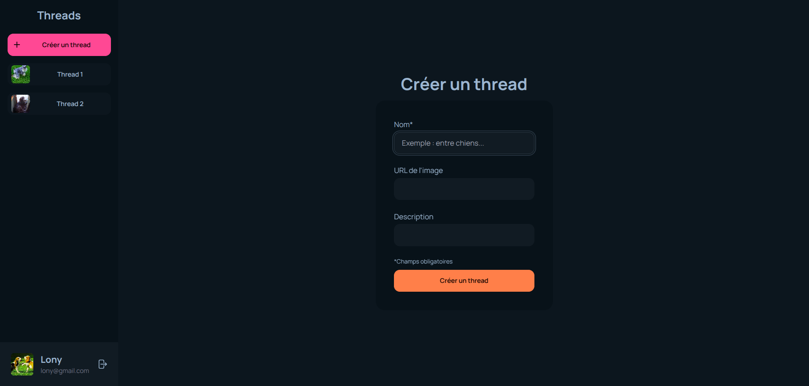
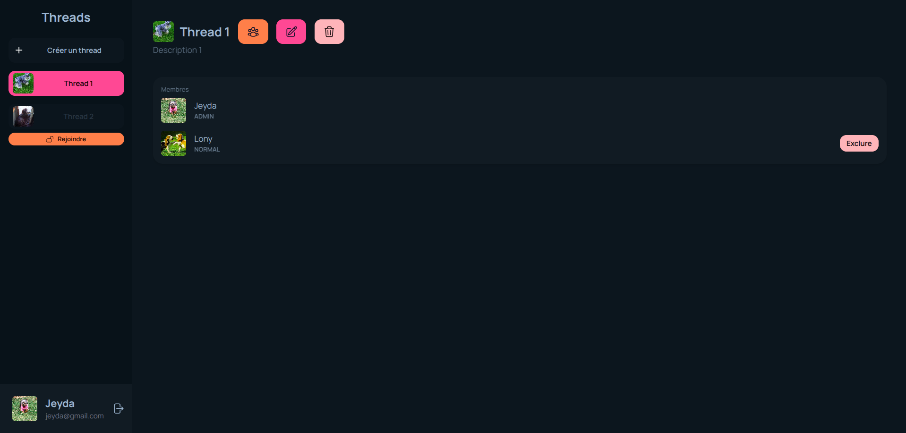
NeuroNexus
NeuroNexus est un logiciel de classification de données basé sur l'algorithme KNN (k-plus proches voisins). Il permet d'importer des fichiers CSV et de classifier dynamiquement les points en fonction de leurs attributs. Conçu avec Java et JavaFX, il offre une interface intuitive et des fonctionnalités avancées pour analyser et visualiser les données sous forme de graphes 2D et 3D. L’application prend en charge différentes distance (Euclidienne, Manhattan) et permet aux utilisateurs de sélectionner les attributs de classification. Un module de validation croisée évalue la fiabilité de l’algorithme en calculant un taux de réussite. Les interactions incluent l’affichage des informations détaillées d’un point en cliquant dessus, ainsi que la possibilité d’ajouter de nouvelles données pour tester leur classification. Grâce à OpenCSV, la gestion des fichiers est optimisée pour garantir la compatibilité avec divers jeux de données. NeuroNexus a été conçu en équipe, en appliquant des principes de programmation modulaire et orientée objet, renforçant mes compétences en développement Java, manipulation de données et visualisation graphique.
Fonctionnalités
- Importation des données via fichiers CSV
- Classification KNN avec choix entre la distance Euclidienne et Manhattan
- Sélection dynamique des axes et critères de classification
- Évaluation de la robustesse du modèle via validation croisée
- Visualisation interactive des points avec un graphe
- Mode 3D pour une meilleure analyse des attributs
Technologies
Compétences techniques acquises
Savoir-être
Visuels
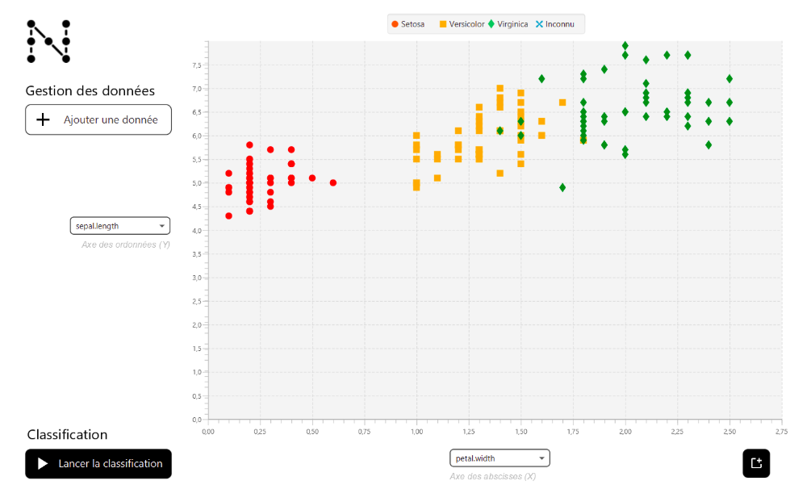
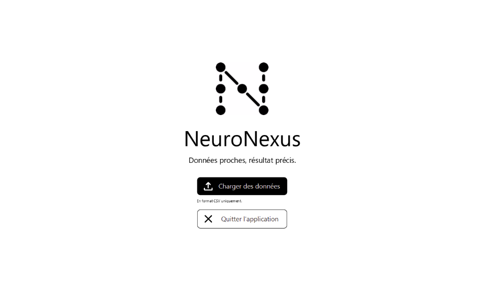
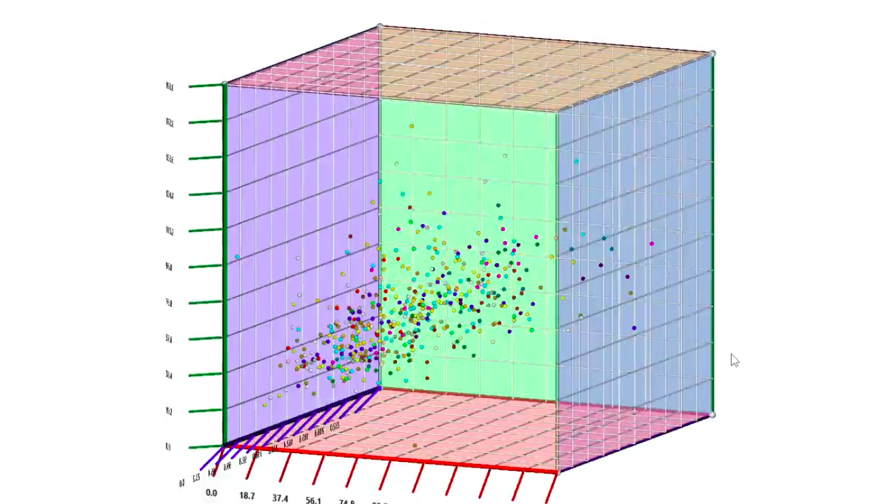
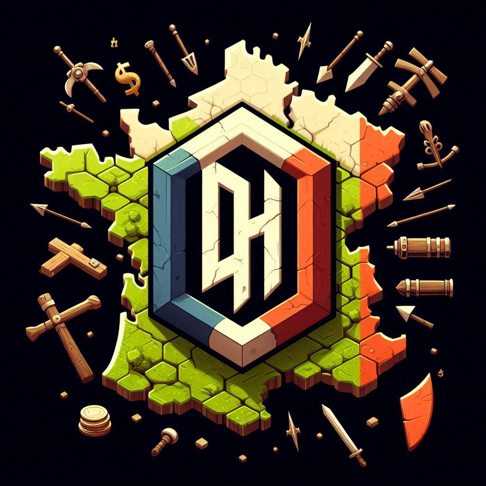
Donjon Hexagone
Jeu tour par tour ("rogue-like") où le joueur avance à travers des niveaux et des étages où il rencontrera des monstres et des objets qui l'aideront dans cette aventure.
Fonctionnalités
- Jeu tour par tour
- Système d'inventaire
- Affichage des statistiques
- Sauvegarde de la progression
- Affichage des monstres et coffres en ASCII
Technologies
Code source
Compétences techniques acquises
Savoir-être
Visuels
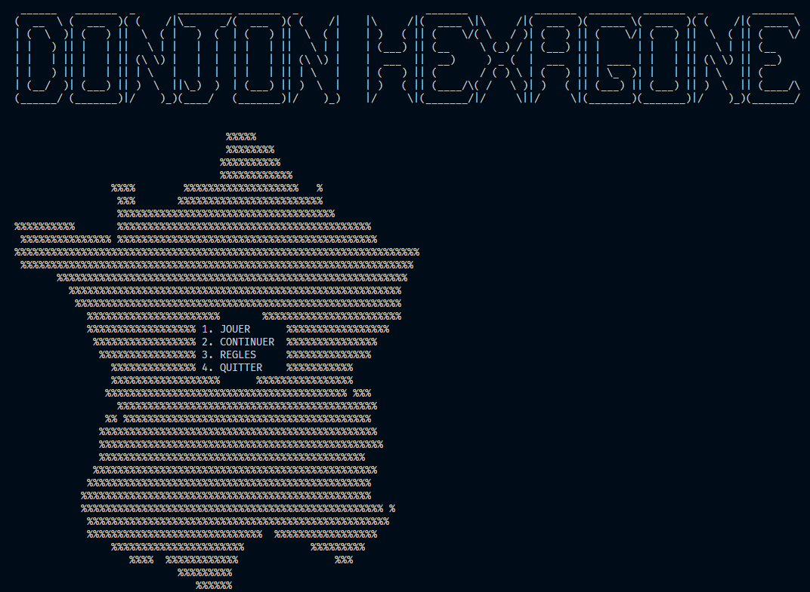
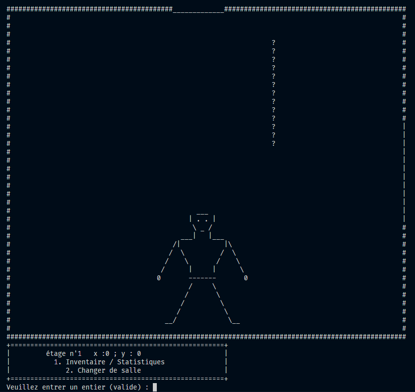
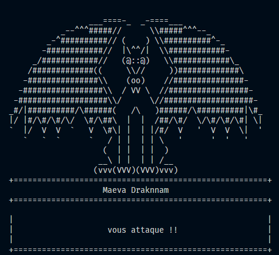
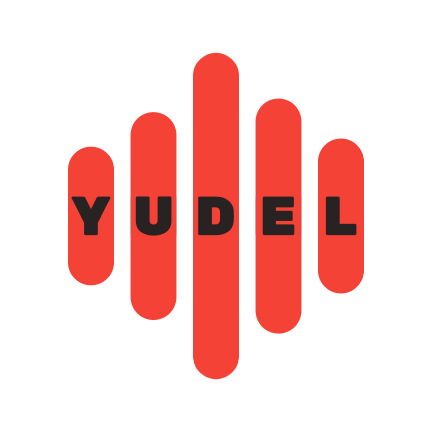
Yudel
Application permettant de télécharger et donc de lire de la musique même hors-ligne.
Fonctionnalités
- Téléchargeur de musique
- Lecteur de musique
- Système de playlists
- Système d’ambiance sonore (ex : pluie...)
- Interface fluide et pratique
Technologies
Compétences techniques acquises
Savoir-être
Visuels
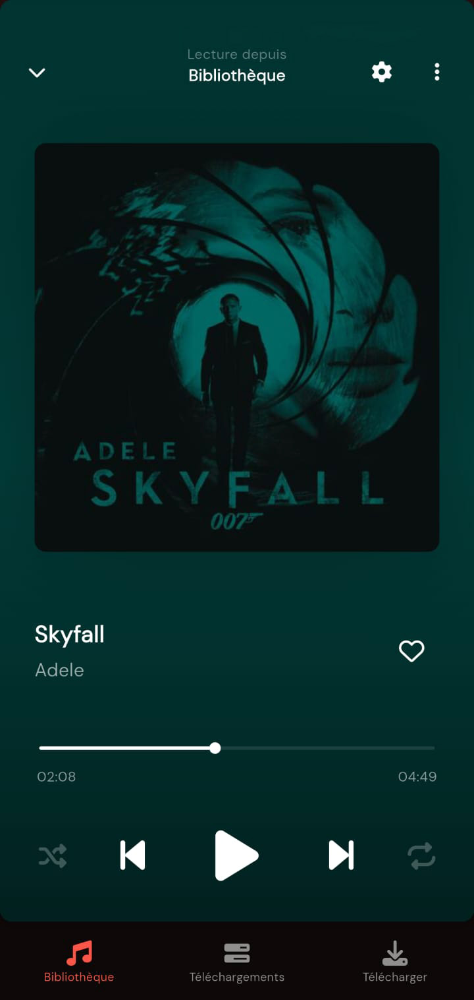
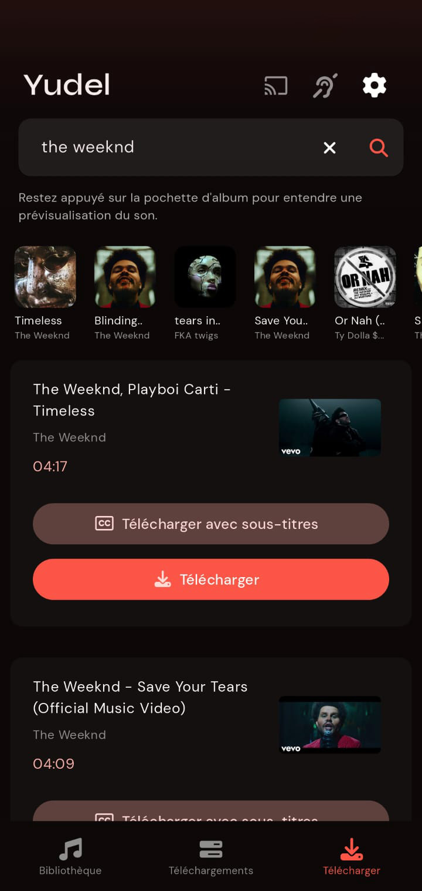
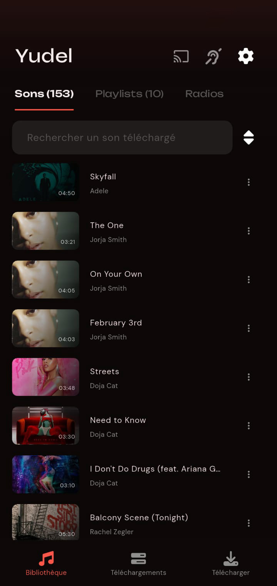
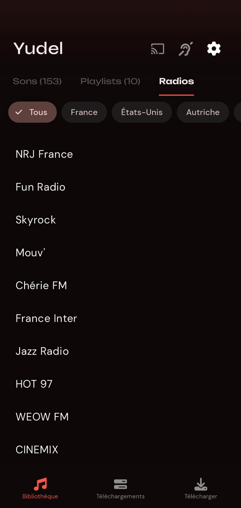
Ma formation
2026 → |
Objectif : Master en alternancePoursuite d'études en développement, idéalement dans la continuité de mon alternance. |
2023 - ajd. |
BUT Informatique3ᵉ année en alternance · Parcours réalisation d'applications : conception, développement, validation |
2023 |
BaccalauréatN.S.I, Mathématiques Lycée Polyvalent Ernest Couteaux, Saint-Amand-les-Eaux |
Mes loisirs
Cinéma
Passionné par le cinéma et tout ce qui l'entoure, j’aime
regarder des films et surtout en réaliser avec mes amis. Je
m'occupe de l'écriture à la réalisation, en passant par le
montage, en veillant à chaque détail, pour offrir une expérience
immersive aux spectateurs.
Bien que nos créations ne soient pas encore publiées, nous
travaillons avec acharnement dans notre temps libre pour les
partager le plus rapidement avec le grand public.
Montage
En lien avec ma passion pour le cinéma, le montage vidéo est un
domaine que j'apprécie particulièrement. Peu importe le type de
vidéo : vlog, court-métrage, mini-documentaire... J'aime assembler
les plans, les sons et les effets pour créer une vidéo qui raconte
une histoire qui intéresse et touche le spectateur.
J'utilise principalement Adobe Premiere Pro et je transitionne à
DaVinci Resolve qui permet de réaliser des montages plus poussés,
avec par exemple une gestion de la colorimétrie avancée.